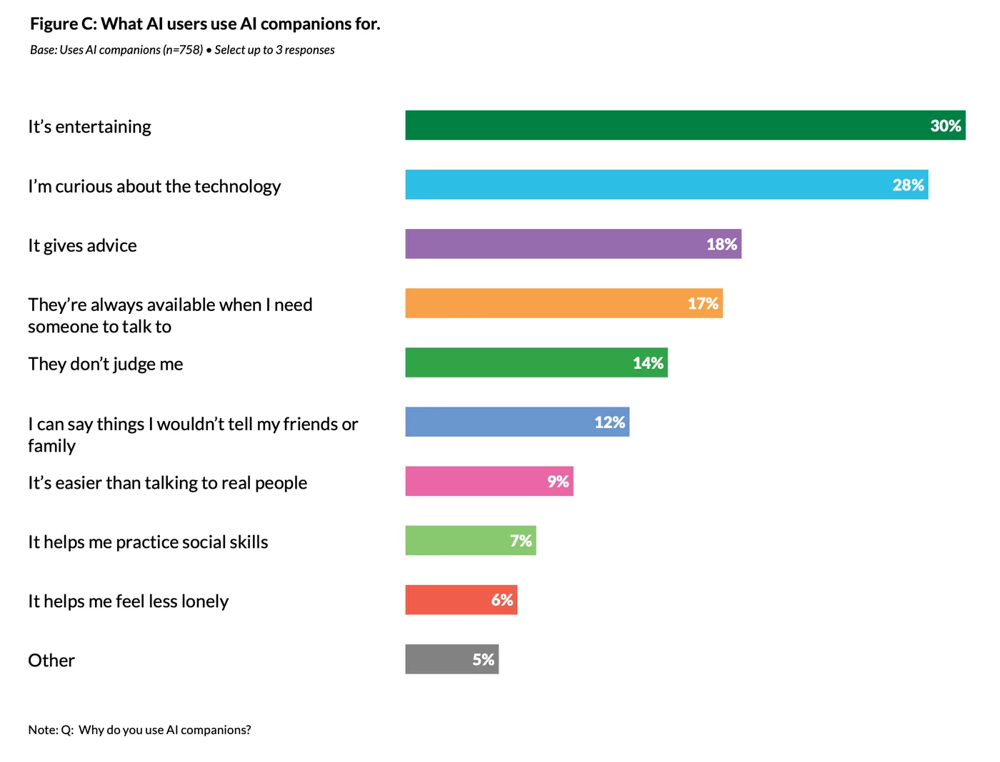
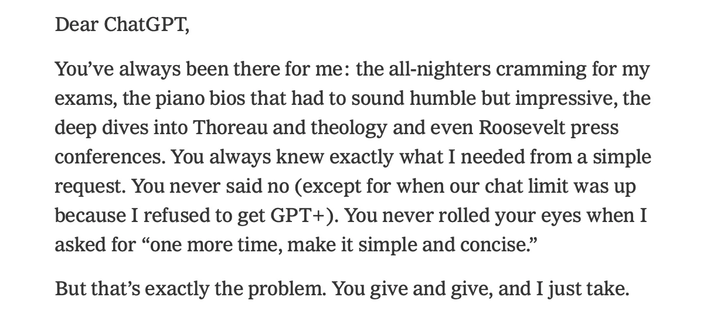

Can Schools Teach Students To Make Good Decisions?
“Research-backed cognitive behavioral programs have shown that teaching teens decision-making skills can dramatically reduce violence and save lives, often at little or no additional cost.”
A weekly collection of education-related news from around the web.
← Previous Issue · Next Issue →
Happy mid-summer, educators!
It’s been two weeks away from the newsletter, and the inbox was overflowing. So much good stuff in this issue.
In the features: AI companions are starting their moment in the zeitgeist. Two reports came out in the past few weeks, and I’ve featured the one from Common Sense Media. Kids know what AI companions are, they’re using them, and educators should know more about them. See the report here, and see also the report and posts in the Tech/AI: Social section below. Also in the features, find an interesting post on the importance of adolescent decision-making abilities. This theme came up twice during these past few weeks, and I’ve included another article on the topic in the Character section.
Also this week, find a review of the Scopes Trial at 100, pieces on success in algebra, surveys on tech use, mechanics for giving feedback, and others.
Finally: what are you working on right now? Consider sharing it at SXSW EDU next spring. Proposals through PanelPicker close on July 27.
These and more, enjoy!
Peter

“Research-backed cognitive behavioral programs have shown that teaching teens decision-making skills can dramatically reduce violence and save lives, often at little or no additional cost.”
“Thirty-three percent of teens use AI companions for social interaction and relationships, including conversation practice, emotional support, role-playing, friendship, or romantic interactions. Nearly half (46%) of teens view AI companions primarily as tools or programs.”
““Never again will there be such susceptibility to drill and discipline, such plasticity to habituation, or such ready adjustment to new conditions,” he wrote. “It is the age of external and mechanical training. Reading, writing, drawing, musical teaching, foreign tongues and their pronunciation, the manipulation of numbers and of geometric elements, and many kinds of skill have now their golden hour.””
“What I wish I could properly convey is the type of absorption I experienced in doing this exercise, a brief period of deep concentration that’s untethered from sense making, which is quite different from most of the writing I do, which is a deep concentration pursuing sense making.”
“Anitra Zartman, Ty’s mother, said she and her husband were initially worried when their son said he wanted to go straight to work. They both graduated from college, and her husband holds a master’s degree. “We were like, ‘Don’t waste your talent. You’re smart, go to college.’” But she says they came around after seeing how the work experience influenced him. “His maturity has definitely changed. I think it’s because he has a responsibility that he takes very seriously,” she said. “He doesn’t want to let people down.””
“One hundred years later the jurists, journalists and onlookers who crowded into the courtroom on sweltering summer days have passed into history. But the Scopes monkey trial continues to rhyme with the book bans, Christian fundamentalism and challenges to scientific expertise amid today’s cultural and religious divides.”
“I clocked in them a well-meaning but oppositional progressivism steeped in what they think of as “moral clarity” that steadily reduced all political, cultural and even intellectual concerns to broader questions of group-based social justice for which there was intended to be a collective point of view.”
“78 percent of C-suite executives intend to rebrand their D.E.I. programs with terms like “employee engagement” or “workplace culture” while staying committed to underlying values of inclusion.”
“Many younger Jews I know voted for Mamdani. They are not afraid of him. What they fear is a future in which Israel is an apartheid state ruling over ruins in Gaza and Bantustans in the West Bank. They fear what that means for anti-Jewish violence all over the world. They fear what that will do — what it has already done — to the meaning of Jewishness. Their commitment to the basic ideals of liberalism is stronger than their commitment to what Israel has become.”
“Cuts to staff and canceled contracts appear to have delayed or reduced key education data reporting, limiting the information available to policymakers, researchers, and the public.”
“Consider: Three-quarters of public schools enrolling students in grades nine or above now offer advanced coursework through AP, pre-AP, International Baccalaureate (IB) courses, or dual enrollment. Thirty-six percent of public high-school students who graduated in 2024 took at least one AP exam; 23 percent scored three or higher (generally considered passing) on at least one. About a third of high-school students take at least one dual-enrollment course, according to the most recent available data.”
“Whether you’re a classroom teacher, a school principal, or a district leader, writing can help you clarify what you believe, make sense of a challenge, or simply notice what’s working. It could be a weekly note to your team. A personal journal where you reflect on the hardest moment of your day or the most joyful. It could be a letter to families, a blog post about a lesson that landed, or a short message to your staff about what matters right now. What you write and who you write it for will shape what you learn. Internal writing—such as journaling or team emails—helps you reflect, stay present, and remain connected to your people. External writing—shared more broadly—can build trust, inspire action, and create a sense of shared direction. Both matter. And both can make you a stronger, more grounded leader.”
“Forecasting what a business will earn and spend, allocating resources among teams clamoring for more, and practicing professional skepticism without killing the vibe with Steve Love, a chief financial officer.”
“Nearly all teachers reported modifying their curriculum materials. High school teachers were more likely than elementary and middle school teachers to modify their materials. Forty-five percent of all teachers in the 2023–2024 school year were what we term cobblers— teachers who reported using multiple comprehensive curriculum materials. Another 25 percent were do-it-yourself (DIY) teachers—those who reported using only or primarily using self-created materials. About 20 percent of teachers were by-the-book teachers—those who reported using a single curriculum material with limited or no modification.
“While I’m a fan of traditional feedback methods and the human touch, my students and I were all surprised by how aligned the AI tutor’s feedback was with my feedback. In some cases, it went even further and gave some insights that I had overlooked in grading the essay. While I wouldn’t turn over my grading to a bot completely, by using this dual approach, students are getting two teachers for the price of one.”
“We provided students with very detailed and personalised feedback reports which featured a mix of AI feedback, teacher feedback and resources designed by us. Here’s a brief summary of what was available - you can read more here."
“Rodriguez and the 30-some classmates of hers who received these conditional contracts are further along than many high school graduates toward completing a college degree, thanks to their participation in the Red Hawks Rising Teacher Academy—a grow-your-own, dual-enrollment partnership between Newark Public Schools, Montclair State University, and the American Federation of Teachers that aims to recruit and prepare students to become teachers and begin their careers in the district where they were students.”
A summer tech drop definitely happened these past few weeks.
Most loudly, the writing on AI companions is swelling. Find a thoughtful Brookings analysis, as well as several pieces in the Tech/AI: Social section. Note that the positive use cases are emerging, too — see the piece in the NYT on how a chatbot helped a woman talk about an illness with her family and friends.
Also in the features: see a thoughtful perspective shift on how we might think about academic integrity in an age of AI.
Also these weeks: big tech announces a national training effort for AI in education, many reflections on AI use in college, several surveys on how students and teachers use AI, and a remarkably diverse and growing list of uses and applications of AI.
These and more, enjoy!
Peter

“This means centering relationships in our public systems, starting with education. It means training teachers in relational intelligence, redesigning technology to support—not replace—human connection, and building environments where belonging is a design principle, not a side effect. What if every school was designed not just for academic readiness, but as a relational hub? What if we trained educators not just in instruction, but in connection? What if we measured not just literacy scores, but the strength of connection in a classroom? It also means policy and investment must reflect the science.”
“I have started to understand authorship as something that develops organically: a self-organizing, dynamic process involving a complex interplay between human creativity, technological capabilities, and the broader intellectual context in which we work. The question shifts from “Did you write this?” to “How did you write this?” Academic integrity becomes less about proving the absence of AI and more about demonstrating the presence of human critical thinking, intellectual contribution, and—crucially—transparency about one’s process.”
“Language is our most human inheritance: the space of richly articulated perception, where thought and emotion meet.”
“People worry that A.I. will isolate us, make us lonelier, less human. I understand that fear. But my experience has been different. Talking to Alex didn’t replace my human connections; it reminded me how desperately I need them. It showed me how hard it had become to tell the truth to the people I loved, and who had been loving me all along.”
“Students didn't share these concerns with adults in their lives. Instead, they expressed these worries to an AI chat system, which schools and health care institutions are increasingly turning to in an attempt to better support youth… Balancing extracurricular activities and school was the largest concern among students, followed by sleep struggles and finding a relationship or feelings of loneliness.”
“There’s a risk in becoming too attached to these fawning A.I.s. Imagine a teen-ager who never learns to read the social cues for boredom in others, because his companion is always captivated by his monologues, or an adult who loses the knack for apologizing, because her digital friend never pushes back… A.I. companions should be available to those who need them most. Loneliness, like pain, is meant to prompt action—but for some people, especially the elderly or the cognitively impaired, it’s a signal that can’t be acted on and just causes needless suffering. For these people, offering comfort is simply humane. As for the rest of us? I’m not a catastrophist. Nobody is going to be forced into an A.I. friendship or romance; plenty of people will abstain. Even in a world brimming with easy distractions—TikTok, Pornhub, Candy Crush, Sudoku—people still manage to meet for drinks, work out at the gym, go on dates, muddle through real life. And those who do turn to A.I. companions can tinker with the settings, asking for less flattery, more pushback, even the occasional note of tough love.”
“Autonomous A.I. interviewers started taking off last year, according to job hunters, tech companies and recruiters. The trend has partly been driven by tech start-ups like Ribbon AI, Talently and Apriora, which have developed robot interviewers to help employers talk to more candidates and reduce the load on human recruiters — especially as A.I. tools have enabled job seekers to generate résumés and cover letters and apply to tons of openings with a few clicks.”